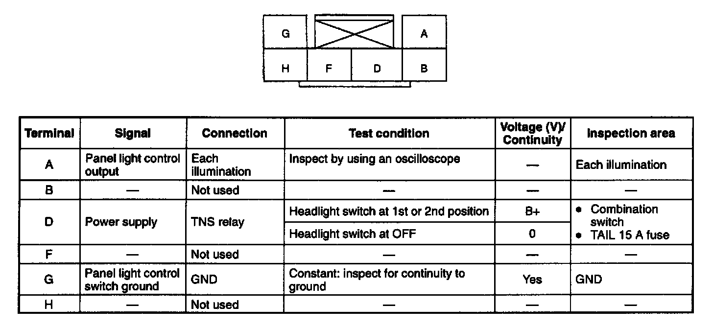
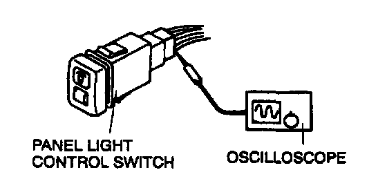
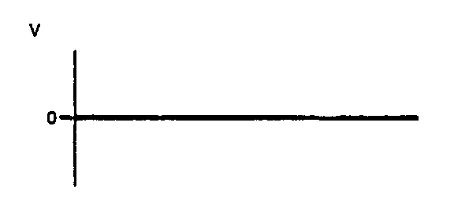
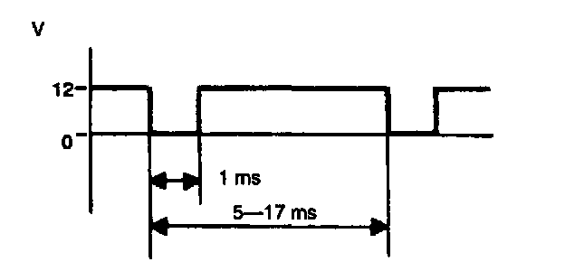

Dimmer Switch: Testing and Inspection
PANEL LIGHT CONTROL SWITCH INSPECTION1. Remove the panel light control switch without disconnecting the connector.
2. Measure the voltage at the panel light control switch terminals as indicated below.
3. Disconnect the panel light control switch connector before inspecting for continuity at terminal G.
4. If not as specified, inspect the parts listed under "Inspection area" and the related wiring harnesses.
5. If the parts and wiring harnesses are okay but the system still does not work properly, replace the panel light control switch.
Terminal Voltage (Reference):

"A" terminal inspection

1. Measure the wave pattern of the A terminal on the panel light control switch by using an oscilloscope.
2. Set the headlight switch to either the first or second position.
3. Set the panel light control switch to the brightest position.

4. Verity that the pattern on the screen is as shown in the figure.

5. Verify that the pattern on the screen matches the pattern shown in the figure as the panel light control switch is gradually turned to the darkest position.